DocPal 用戶選單導覽 — 客戶端網站（Client Site）
Home
Menu path: Client → Home
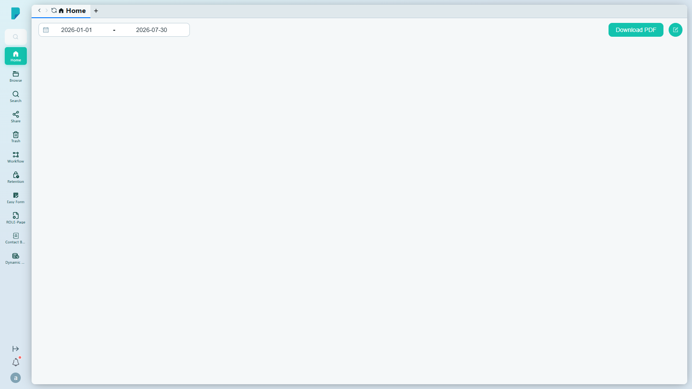
Home 畫面 此畫面的用途
每位用戶登入後都會到達這個個人儀表板——它是每日工作的單一起點。它把個人活動與檔案概覽匯集於一處，並提供匯出工具，可將目前檢視匯出作報告分享。
工具列與操作
PERSONAL tab （個人分頁）——此畫面顯示的儀表板分區。Home 儀表板顯示於其下。Start date / End date （開始／結束日期）——儀表板內容的日期範圍篩選。點擊其中一個欄位會開啟雙月曆選擇器，並附一鍵快捷選項：
This month（本月）
Last month（上月）
Last 3 months（過去三個月）
This year（本年）
Last year（去年）
本站點的預設範圍為年初至今（2026-01-01 至 2026-07-31）。
Download PDF ——將目前儀表板檢視匯出為 PDF 檔案，作報告或分享之用。在此測試站點上，點擊後沒有可見的確認提示；下載會直接開始。
列表與欄位
對話框與面板
日期範圍選擇器
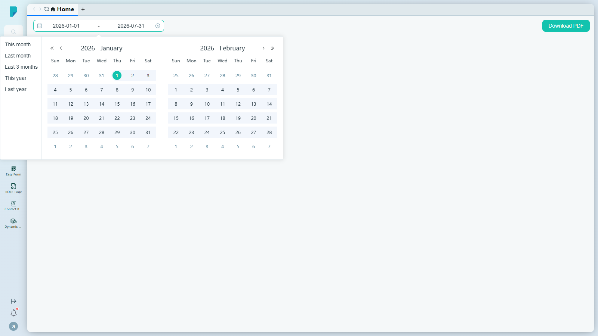
日期範圍選擇器
左右並排的雙月曆（附上一個月／下一個月及年份導航箭嘴），用於選取開始與結束日期。
常用範圍的快捷按鈕（列於上文）可一鍵填入兩個日期。
測試站點備註
在此測試站點上，儀表板主體並未渲染任何圖表或小工具——只顯示儀表板標頭（日期範圍 + Download PDF）。
誰會使用
每位 DocPal 用戶——這是登入後的第一個畫面。
Browse
Menu path: Client → Browse → Browse
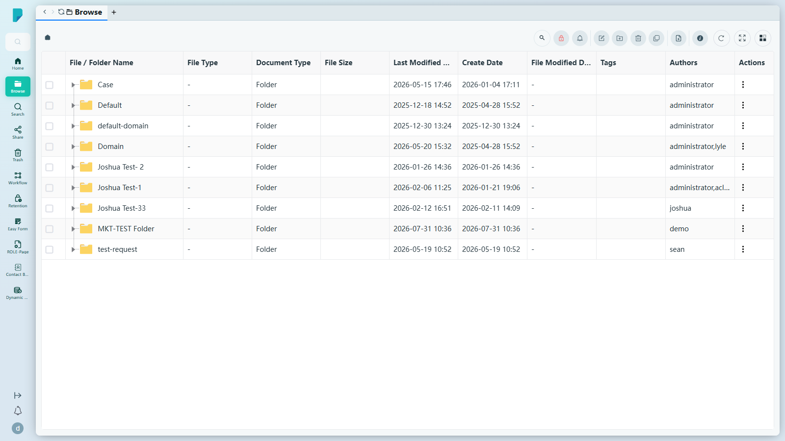
Browse 畫面 此畫面的用途
以熟悉的資料夾與檔案檢視呈現整個檔案庫，讓尋找文件就像翻閱整理得井井有條的檔案櫃。建立資料夾和檔案、上傳內容、分享、加標籤及管理權限——全部可在同一個網格內完成。根層級顯示頂層資料夾（Case、Default、default-domain、Domain 及團隊資料夾）。
工具列與操作
未選取任何項目時（對目前資料夾操作）：
Search (magnifier) （搜尋放大鏡）——展開一個行內的「Search...」輸入框，篩選目前列表；× 圖示可將其收起。Add Hold Policy ——套用保留政策（hold policy）的下拉選單。本站點的選單為空（未設定任何保留政策）。Subscribe ——訂閱目前項目／位置的通知。Edit Details ——編輯目前項目的詳細資料。New File/Folder （下拉選單）——建立內容：
New Folder
New File
File Upload
Folder Upload
Delete ——刪除項目。Copy Path ——將目前資料夾路徑複製到剪貼簿。Upload Request ——提出上傳請求（向外部人士）。Info ——開啟詳細資料側邊面板（見下文）。Refresh ——重新載入列表。Full screen ——切換網格全螢幕顯示。Column settings ——自訂網格（見下文）。
勾選一或多列後，工具列會切換至選取模式，顯示 「No. of Files Selected: N」 （已選取檔案數目）及一個可清除選取的 ×，另加：
Search 、Delete 、Info 、Refresh 、Full screen 、Column settings （同上）Share ——將所選項目加入 Share Queue （分享佇列，底部中央顯示一個寫著「Share Queue N」的膠囊標籤，附 Share 按鈕及一個可清除的 ×）。點擊 Share 會開啟 Share Queue 分頁：Recipients（輸入電郵地址）、Password、Due Date（預設約 30 日後），以及一個檔案表格（Name、Watermark、Read-Only 切換開關、Last Modified Date、Actions），並附 Confirm 按鈕。Add To Collection （圖層圖示）——開啟 Add To Collection 對話框（見下文）。
列表與欄位
欄位：File / Folder Name （列核取方塊 + 資料夾的展開箭嘴）、File Type 、Document Type 、File Size 、Last Modified Date 、Create Date 、File Modified Date 、Tags 、Authors 、Actions （⋮ 選單）。
每列的 Actions (⋮) 內容選單：
Open
New Folder
New File
File Upload
Folder Upload
Rename
Change Document Type
Copy
Cut
Create Internal Sharing
Delete
Refresh
Preview in New Tab
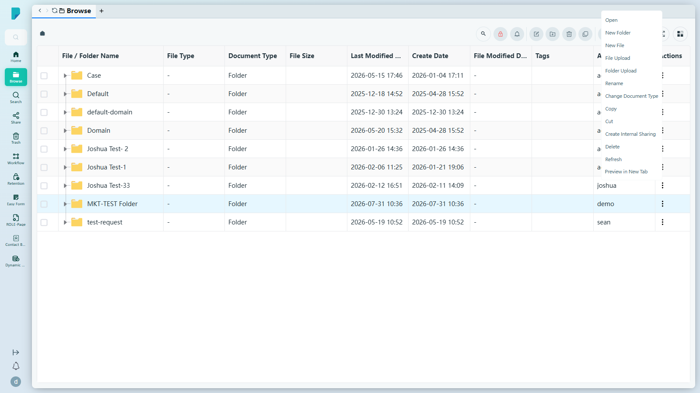
列內容選單 對話框與面板
New Folder
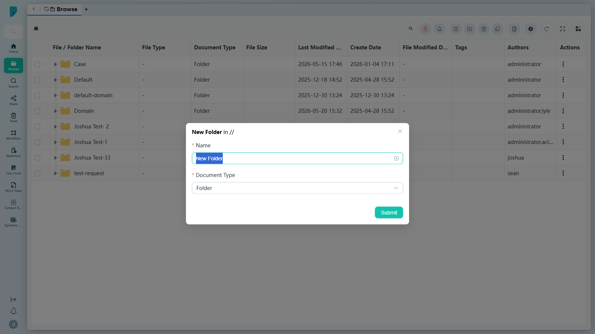
New Folder 對話框
標題顯示目標位置（在根層級時為「New Folder in //」）。
Name *——文字欄位，預填「New Folder」。Document Type *——下拉選單，預設「Folder」。本站點的選項：Case、Contract、Contract Attachment、ContractFolder、Customer、Folder、Pre-Sales、Prospect、Prospect Profile、Prospects、steve_test_2。Submit ——建立資料夾。（已測試：建立「MKT-TEST Folder」，隨即出現在列表中。）
New File
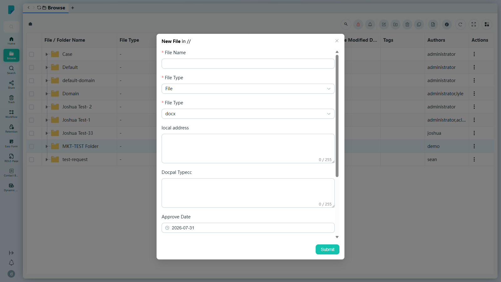
New File 對話框
File Name *——文字欄位。File Type *——文件類型下拉選單（已設定的類型列表很長；預設「File」）。File Type *——檔案副檔名下拉選單：xlsx、docx（預設）、ppt。Metadata fields （元數據欄位）——會根據所選文件類型顯示額外欄位。本站點類型「File」的欄位：local address （文字，最多 255 字元）、Docpal Typecc （文字，最多 255 字元）、Approve Date （日期選擇器，預設為今天）、Country （文字，最多 255 字元）、Approver （文字，最多 255 字元）。每個文字欄位均顯示即時字元計數器（「0 / 255」）。Submit ——建立檔案（測試期間未提交）。
Add To Collection
Search a collection or Create new ——選取現有集合，或輸入新名稱。Submit ——加入所選項目。
Column settings
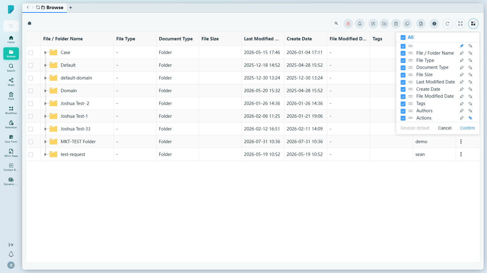
Column settings
All 主控核取方塊，加上每個欄位各自的顯示／隱藏核取方塊。每個欄位可設 Freeze left / Freeze right / Unfreeze （向左凍結／向右凍結／取消凍結）。
Restore default （未改動時停用）、Cancel 、Confirm 。
Info 側邊面板
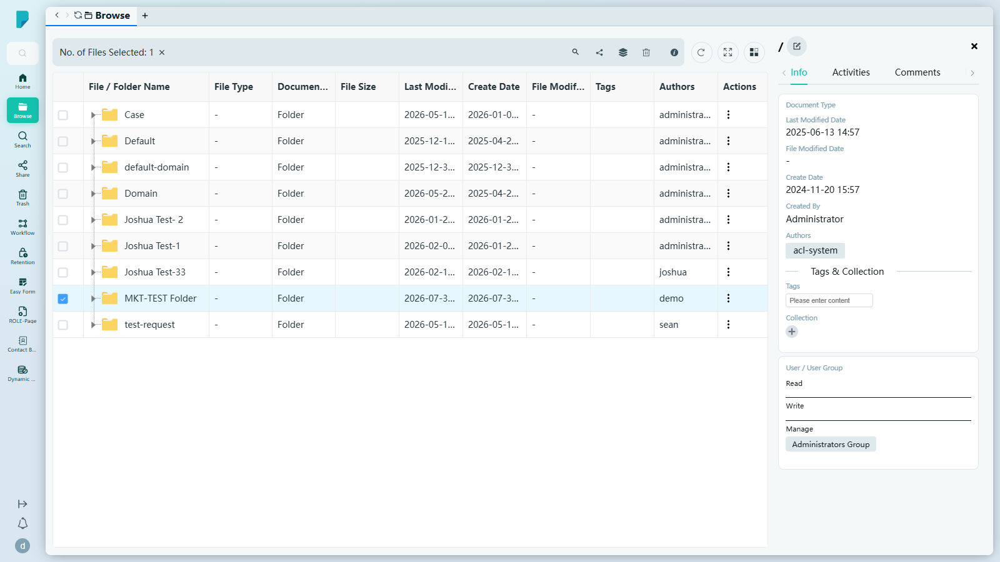
Info 面板 以右側抽屜形式為目前位置／所選項目開啟，設有四個分頁：
Info ——Document Type、Last Modified Date、File Modified Date、Create Date、Created By、Authors；一個 Tags & Collection 分區（Tags 輸入框、Collection 新增按鈕）；以及按 Read / Write / Manage 分組的 User / User Group 權限（例如 Administrators Group 歸於 Manage）。頂部的鉛筆圖示可編輯詳細資料。Activities ——項目操作紀錄的審計訊息流（例如「File Management — User administrator preview document [/] — 2026-07-31 09:47」），附 loadMore 按鈕。Comments ——留言輸入框，附 Send 按鈕。Related ——相關項目（本站點根層級顯示「No Data」）。
測試站點備註
已建立測試數據：Browse 根層級的資料夾 「MKT-TEST Folder」 （可見於主要截圖，作者為「demo」）。
本文件於 sit-v3 測試站點上編寫；上述所有對話框均已在該站點開啟並驗證。
誰會使用
日常處理檔案的最終用戶及文件管理人員。
Collection
Menu path: Client → Browse → Collection
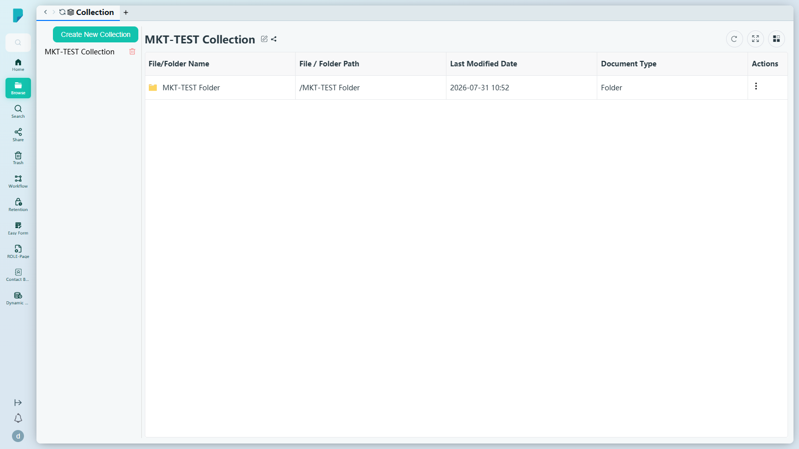
Collection 畫面 此畫面的用途
把相關文件分組成集合（Collection），讓專案檔案、個案檔案或工作組合無論原件放在哪裡都能聚在一起。在左邊選取一個集合，即可在右邊看到當中所有項目——每個項目都保留指向其真實位置的連結。此列表顯示你自己的集合。
工具列與操作
Create New Collection ——開啟建立對話框（見下文）。Collapse icon （箭嘴圖示，位於按鈕旁）——摺疊／展開集合列表面板。Collection list （左側面板）——按名稱列出你的集合；點擊其中一個以載入其內容。每個集合都有一個紅色垃圾桶圖示 ，用於刪除該集合。已開啟集合標題旁：
Edit Collection Info （鉛筆圖示）——編輯集合的詳細資料。Add to Share Queue （分享圖示）——將整個集合加入 Share Queue 作分享。
Refresh ——重新載入內容表格。Full screen ——切換表格全螢幕顯示。Column settings ——顯示／隱藏表格欄位。
項目從 Browse 加入集合：選取檔案／資料夾，然後使用 Add To Collection （見 02-browse）。Add To Collection 選擇器會列出現有集合（本站點：12dsd、2、MKT-TEST Collection、Test-1、Ups），亦可讓你輸入新名稱。
列表與欄位
欄位：File/Folder Name 、File / Folder Path （項目的真實位置，例如 /MKT-TEST Folder）、Last Modified Date 、Document Type 、Actions 。
內容列的 Actions (⋮) 只有一個項目：Remove File / Folder Path ——將項目從集合中移除（原始檔案仍留在其資料夾內）。
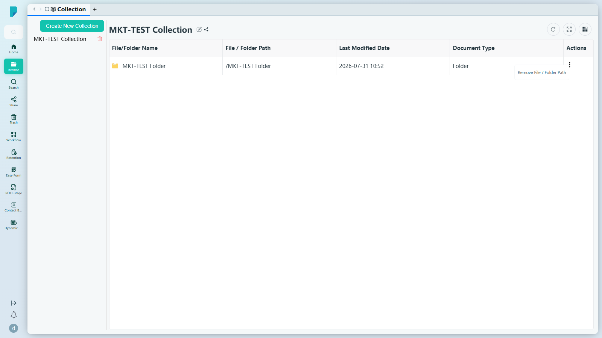
列操作 對話框與面板
Create New Collection
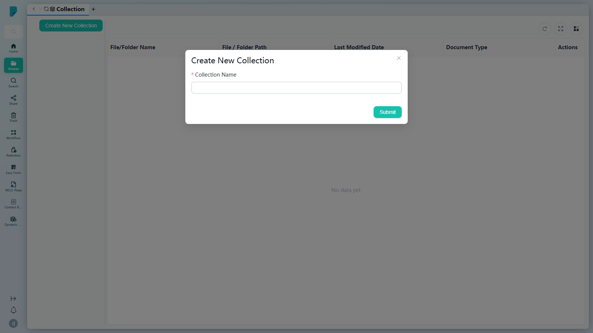
Create New Collection 對話框
Collection Name *——文字欄位。Submit ——建立集合；集合隨即出現在左邊列表。（已測試：建立「MKT-TEST Collection」。）
測試站點備註
已建立測試數據：集合 「MKT-TEST Collection」 ，並已將 「MKT-TEST Folder」 加入其中（可見於主要截圖）。
左邊列表只顯示登入用戶（demo）建立的集合——其他用戶建立的集合（12dsd、2、Test-1、Ups）會出現在 Add To Collection 選擇器中，但不會出現在此列表。
誰會使用
需要把分散在不同資料夾的文件匯集成單一工作組合的用戶。
Upload
Menu path: Client → Browse → Upload
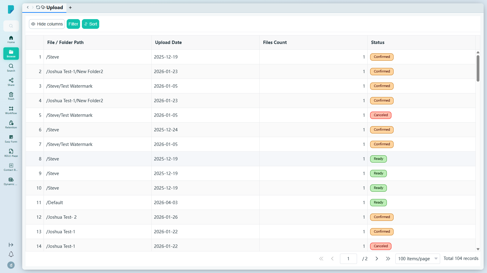
Upload 畫面 此畫面的用途
以可追蹤的檢視呈現各個上傳批次——每個上傳工作都會記錄於此，包括目標路徑、日期、檔案數目及狀態，讓用戶準確掌握甚麼內容在何時進入了檔案庫。
工具列與操作
Hide columns （隱藏欄位）——「Column Visibility」彈出面板：拖曳手柄（⋮⋮）可重新排列欄位次序，每個欄位設有開關切換，並附 Hide All / Show All 按鈕。其中包括一個預設隱藏的 Modified Date 欄位。Filter （篩選）——建立篩選規則的彈出面板（「View configuration is auto-saved. Your changes are saved in real time and synced to other members.」，即檢視設定會自動儲存、實時保存並同步給其他成員）：
+ Add filter condition 新增一列規則：When + Select field + Select operator + Enter value ，並附垃圾桶圖示以移除該規則。可篩選欄位：File / Folder Path、Upload Date、Files Count、Status、Modified Date。
Sort （排序）——建立排序規則的彈出面板（「View settings are saved automatically...」，即檢視設定會自動儲存……）：
+ Add sort rule 新增一列：欄位下拉選單（同樣五個欄位），加上 A → Z / Z → A 方向按鈕及垃圾桶圖示。
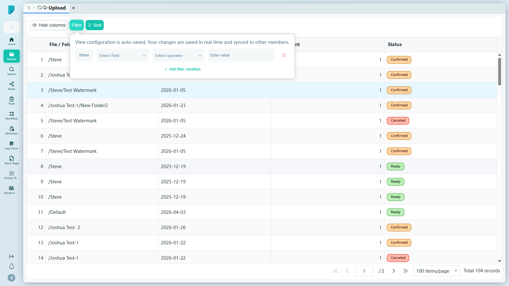
篩選條件建立器 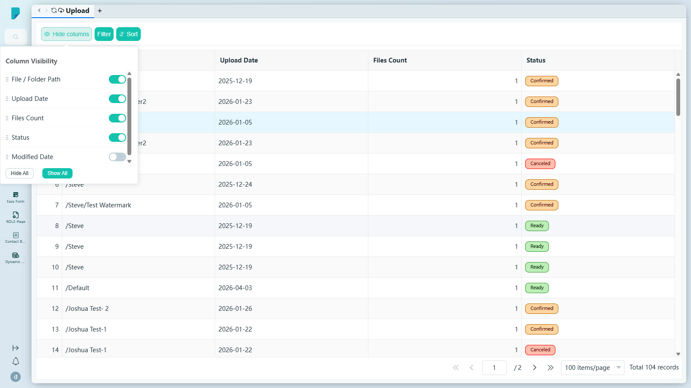
隱藏欄位 列表與欄位
列號加上以下欄位：File / Folder Path （批次上傳到的位置，例如 /Steve/Test Watermark）、Upload Date 、Files Count 、Status 。
本站點所見的狀態值：Confirmed 、Canceled 、Ready 。
此處各列均為唯讀——點擊某列不會開啟任何詳細檢視。
分頁列：Jump up page （第一頁）、Previous page （上一頁）、頁碼輸入框（例如「1 / 2」）、Next page （下一頁）、Jump down page （最後一頁）、每頁筆數選擇器（10 / 15 / 20 / 50 / 100 items/page ，預設 100），以及 Total N records 總筆數計數器（本站點為 104 筆）。
測試站點備註
列表在 sit-v3 測試站點上載入及分頁均正常（104 個上傳批次）。未發現錯誤。
誰會使用
任何需要把文件放入 DocPal 並追蹤已上傳內容的用戶。
Upload Management
Menu path: Client → Browse → Upload Management
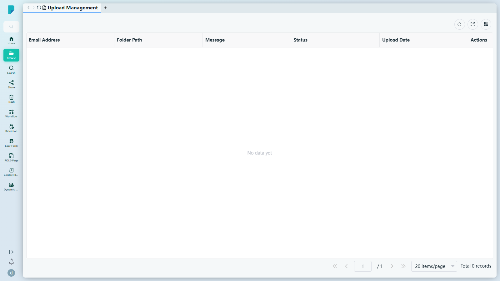
Upload Management 畫面 此畫面的用途
你向外部人士發出的每個上傳請求，都會在這個列表中一一追蹤——邀請了誰、檔案應上傳到哪裡，以及上傳是否已經完成。它讓外部提供的檔案清晰可見、易於掌控，而無需為外部人士開設帳戶。
工具列與操作
Refresh ——重新載入列表。Full screen ——切換表格全螢幕顯示。Column settings ——顯示／隱藏表格欄位。
新的上傳請求從 Browse 頁面的工具列建立（Upload Request 圖示——見 02-browse）。
列表與欄位
欄位：Email Address （收件人）、Folder Path （其檔案的上傳目的地）、Message 、Status 、Upload Date 、Actions 。
分頁列：Jump up page （第一頁）、Previous page （上一頁）、頁碼輸入框、Next page （下一頁）、Jump down page （最後一頁）、每頁筆數選擇器（預設 20 items/page ）、Total N records 總筆數計數器。
在此測試站點上，列表為空（「No data yet」，0 筆記錄）——此用戶尚未發出任何上傳請求。
對話框與面板
Upload Request（從 Browse → Upload Request 圖示開啟）
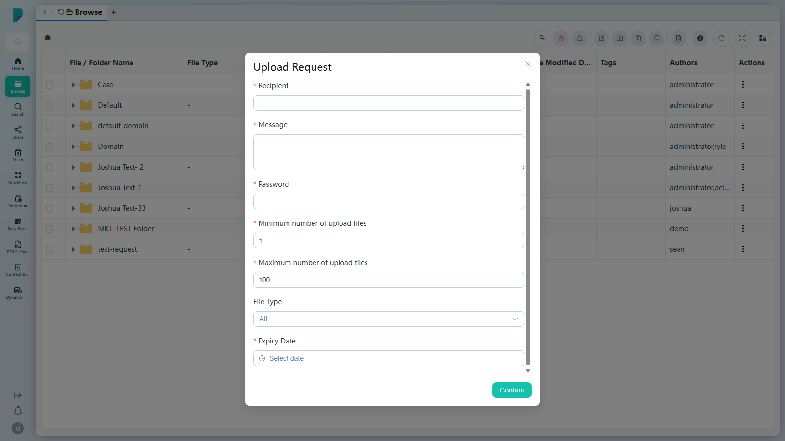
Upload Request 對話框
Recipient *——外部人士的電郵地址。Message *——附於邀請中的多行訊息。Password *——收件人開啟上傳連結所需的密碼。Minimum number of upload files *——上傳檔案數目下限，預設 1。Maximum number of upload files *——上傳檔案數目上限，預設 100。File Type ——允許的檔案類型，可多選；選項：.xls、.xlsx、.doc、.docx、.pptx、.ppt、.mp3、.mp4（預設「All」）。Expiry Date *——日期選擇器；上傳連結在此日期後失效。Confirm ——發出請求。測試期間未提交（因會真實發出邀請電郵）；你確認的請求會出現在本頁的列表中。
測試站點備註
誰會使用
需要向客戶、供應商或合作夥伴收集文件，並希望清晰記錄每個未完成請求的用戶。
Folder Cabinet
選單路徑： Client → Browse → Folder Cabinet
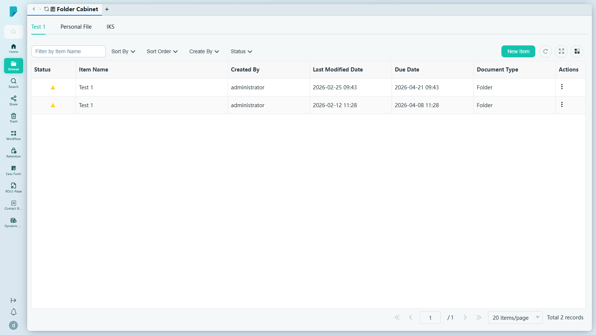
Folder Cabinet 畫面 此畫面的用途
以團隊由實體檔案記錄沿用下來、熟悉的檔案櫃及資料夾結構來整理文件。
你可以在此做甚麼
瀏覽各個檔案櫃及其下的資料夾
開啟按檔案櫃結構整理的文件
誰會使用
習慣以檔案櫃、抽屜及資料夾思維工作的檔案管理人員及一般用戶。
Search
選單路徑： Client → Search
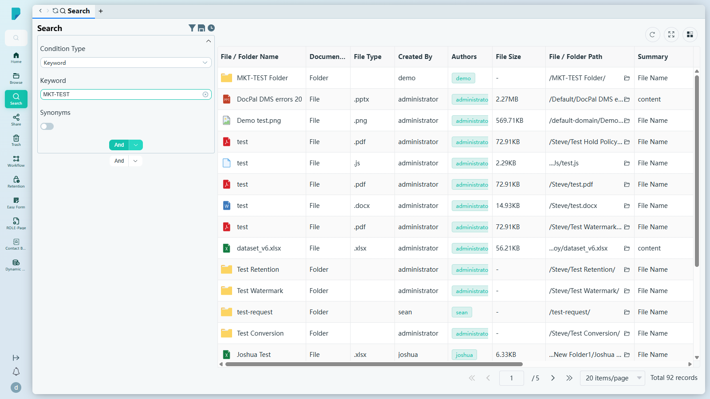
Search 畫面 此畫面的用途
橫跨整個文件庫的進階搜尋——透過組合精確的搜尋條件找出任何文件，毋須逐層翻查資料夾。你可以儲存常用的搜尋，日後一按即可重新執行。
工具列與操作
Define Search Criteria (funnel icon) — 開關左側的已儲存搜尋面板：
Filter By Label — 輸入文字以篩選已儲存的搜尋；旁邊的 + 按鈕可將目前的搜尋儲存為新條件（見下文對話框）。User Define — 你自己儲存的搜尋。System Define — 系統隨附的預設搜尋（在此測試網站為：YUILY、SK-II2、Query documents）。
Save (floppy icon) — 儲存目前的搜尋。Recent (clock icon) — 最近執行過的搜尋。Refresh — 重新載入結果。Full screen — 將結果表格切換為全螢幕。Column settings — 顯示／隱藏結果欄位。
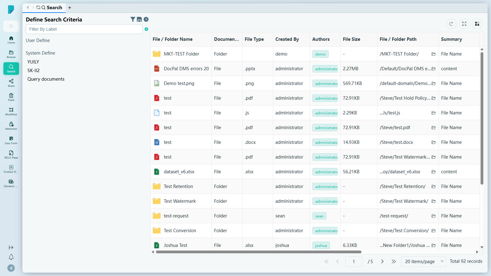
Define Search Criteria 面板 建立查詢
Condition Type — 下拉選單提供 12 種條件類型：
Author groups、Authors、Collections、Create Date、Created By、Creator groups、Document Type、File Size、File Type、Keyword、Last Modified Date、Metadata
Keyword — 要搜尋的關鍵字。按 Enter 即執行搜尋（介面沒有獨立的 Search 按鈕）。Synonyms — 開關；開啟後亦會同時搜尋相關詞彙。And / Or — 分割按鈕，以 And 或 Or 邏輯組合多個條件。
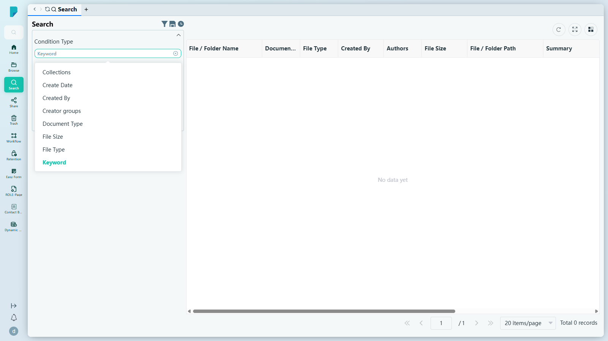
Condition Type 選項 列表與欄位
結果欄位：File / Folder Name （附檔案類型圖示）、Document Type 、File Type （副檔名）、Created By 、Authors 、File Size 、File / Folder Path （附複製路徑圖示）、Summary （顯示符合的內容，例如 "File Name" 或 "content"）、Create Date 、Last Modified Date 、Tags 。
分頁列：Jump up page （第一頁）、Previous page 、頁碼輸入框（例如 "1 / 5"）、Next page 、Jump down page （最後一頁）、每頁筆數選擇器（預設 20 items/page ）、Total N records 計數器。
此測試網站的實際範例：以關鍵字 MKT-TEST 搜尋 → 共 92 筆記錄，首個結果為 MKT-TEST Folder。
對話框與面板
Save search criterion（由 Define Search Criteria → + 開啟）
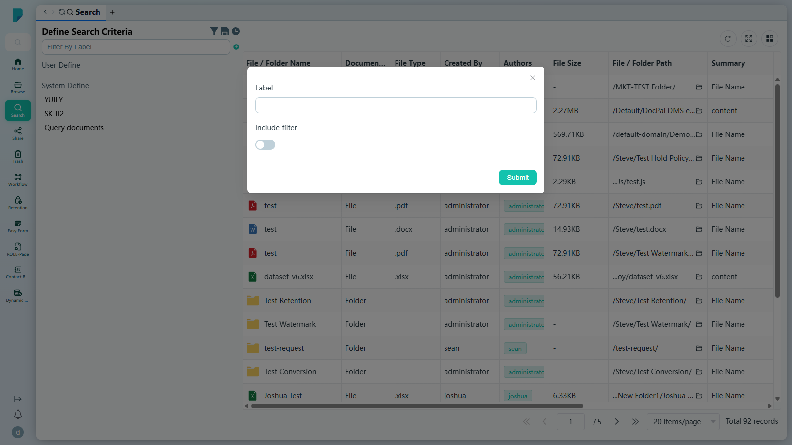
Save criterion 對話框
Label — 已儲存搜尋的名稱。Include filter — 開關；一併儲存目前的篩選條件。Submit — 將搜尋儲存至 User Define。
測試網站的備註
測試網站的已知問題： 儲存自訂搜尋條件（Define Search Criteria → + → Submit）會因後端 500 錯誤而失敗，並令 Search 分頁崩潰，其後顯示「ERROR : Search — AxiosError: Request failed with status code 500」及 Refresh 按鈕（見 client-07-search-save-500-error.png）。搜尋功能本身運作正常。
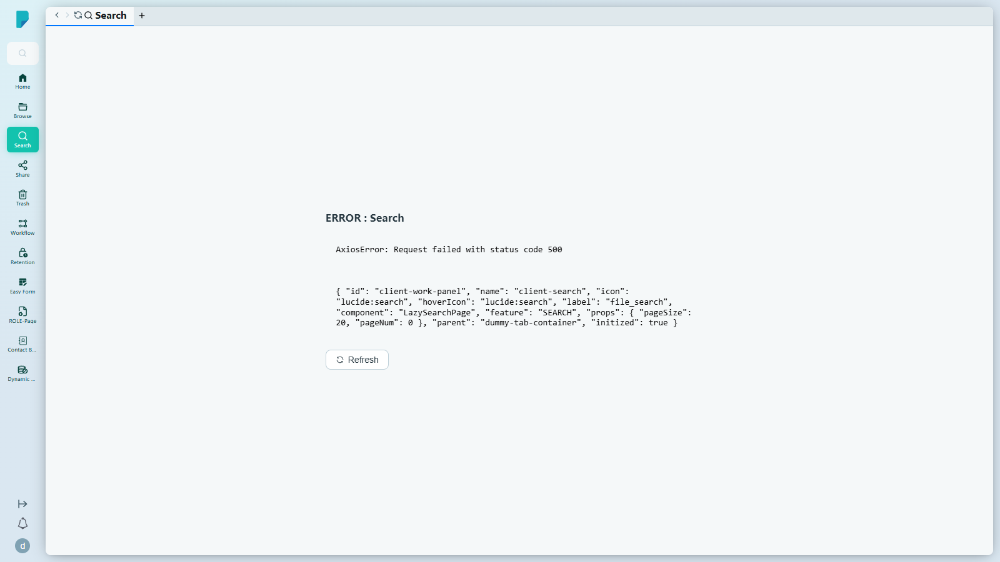
儲存失敗後的錯誤畫面 誰會使用
所有用戶——由偶爾搜尋文件的用戶，到建立精確多條件查詢的進階用戶。
External Sharing
選單路徑： Client → Share → External Sharing
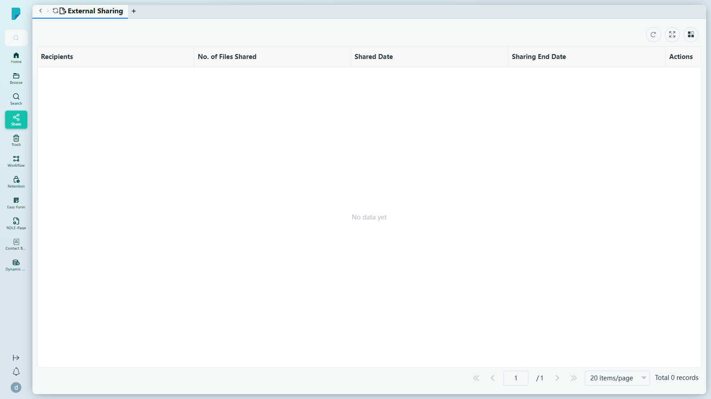
External Sharing 畫面 此畫面的用途
你分享給 DocPal 以外人士的所有連結都集中在此追蹤——誰收到連結、包含多少檔案、何時到期——讓外部存取一目了然，並可隨時撤銷。
工具列與操作
Refresh — 重新載入列表。Full screen — 將表格切換為全螢幕。Column settings — 顯示／隱藏表格欄位。
新的外部分享由 Browse 建立：選取檔案／資料夾，按 Share 將它們加入 Share Queue ，然後在 Share Queue 的浮標按鈕上按 Share 開啟分享表格（見下文）。
列表與欄位
欄位：Recipients 、No. of Files Shared 、Shared Date 、Sharing End Date 、Actions 。
分頁列：Jump up page （第一頁）、Previous page 、頁碼輸入框、Next page 、Jump down page （最後一頁）、每頁筆數選擇器（預設 20 items/page ）、Total N records 計數器。
此測試網站的列表為空（「No data yet」，0 筆記錄）——此用戶沒有任何外發的外部分享。
對話框與面板
Share Queue — 外部分享表格（由 Browse → Share 開啟）
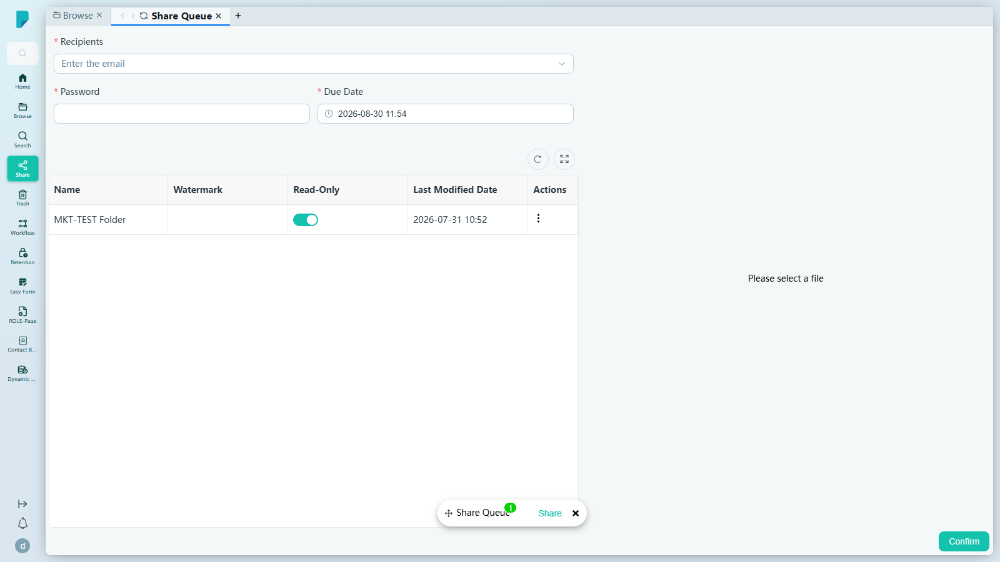
外部分享表格
Recipients * — 一個或多個電郵地址（「Enter the email」）。Password * — 收件人開啟分享連結所需的密碼。Due Date * — 分享的到期日；預設為約 30 日後（例如 2026-08-30）。File table — 已排入隊列的項目，欄位包括：Name 、Watermark 、Read-Only （每個項目設有開關，預設開啟）、Last Modified Date 、Actions 。Confirm — 建立分享（測試期間並未提交，以免向真實收件人發送電郵）；已確認的分享會顯示在本頁的列表中。
測試網站的備註
此頁面及分享表格在 sit-v3 上均正常載入；未發現錯誤。測試期間並未提交任何分享。
誰會使用
任何需要與機構以外的客戶、合作夥伴或審閱者分享文件，並需要追蹤哪些分享仍然有效的人士。
Share With Me
選單路徑： Client → Share → Share With Me
Share With Me 畫面 此畫面的用途
以收件匣形式列出其他人分享給你的所有項目——內容是甚麼、由誰分享、分享有效期多久，以及你可以對它進行哪些操作。
工具列與操作
Refresh — 重新載入列表。Full screen — 將表格切換為全螢幕。Column settings — 顯示／隱藏表格欄位。
列表與欄位
欄位：File/Folder Name 、File / Folder Path 、Shared By 、Shared Date 、Sharing Start Date 、Sharing End Date 、Permission 、Status 、Actions 。
分頁列：Jump up page （第一頁）、Previous page 、頁碼輸入框、Next page 、Jump down page （最後一頁）、每頁筆數選擇器（預設 20 items/page ）、Total N records 計數器。
此測試網站的列表為空（「No data yet」，0 筆記錄）——沒有任何項目分享給此用戶。
測試網站的備註
誰會使用
所有用戶——這裡是接收同事或外部人士交付文件的集中地。
Internal Sharing
選單路徑： Client → Share → Internal Sharing
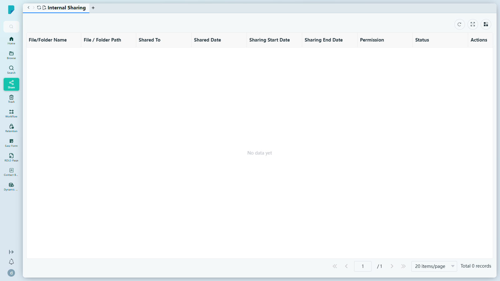
Internal Sharing 畫面 此畫面的用途
清晰記錄你在 DocPal 內部分享給同事的所有項目——誰收到、對方可以進行哪些操作，以及分享的有效期。
工具列與操作
Refresh — 重新載入列表。Full screen — 將表格切換為全螢幕。Column settings — 顯示／隱藏表格欄位。
新的內部分享由 Browse 建立：在列的 ⋮ 選單中選擇 Create Internal Sharing （見下文對話框）。
列表與欄位
欄位：File/Folder Name 、File / Folder Path 、Shared To 、Shared Date 、Sharing Start Date 、Sharing End Date 、Permission 、Status 、Actions 。
分頁列：Jump up page （第一頁）、Previous page 、頁碼輸入框、Next page 、Jump down page （最後一頁）、每頁筆數選擇器（預設 20 items/page ）、Total N records 計數器。
此測試網站的列表為空（「No data yet」，0 筆記錄）——此用戶沒有任何外發的內部分享。
對話框與面板
Create Internal Sharing（由 Browse → 列的 ⋮ 選單開啟）
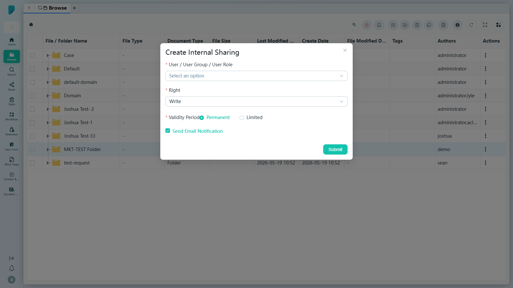
Create Internal Sharing 對話框
User / User Group / User Role * — 選擇器，列出各個用戶群組（例如 President's Office、Personal Dept、Finance Dept、Onedrive Team）及個別用戶。Right * — 權限級別：Read 、Write （預設）、Manage 。Validity Period * — Permanent （預設）或 Limited 單選按鈕。Send Email Notification — 核取方塊，預設勾選。Submit — 建立分享（測試期間並未提交）；已確認的分享會顯示在本頁的列表中。
測試網站的備註
此頁面及對話框在 sit-v3 上均正常載入；未發現錯誤。測試期間並未提交任何分享。
誰會使用
任何需要向團隊成員交付文件，並希望集中檢視已分享項目、對象及分享條件的人士。
Trash（回收站）
選單路徑： Client → Trash
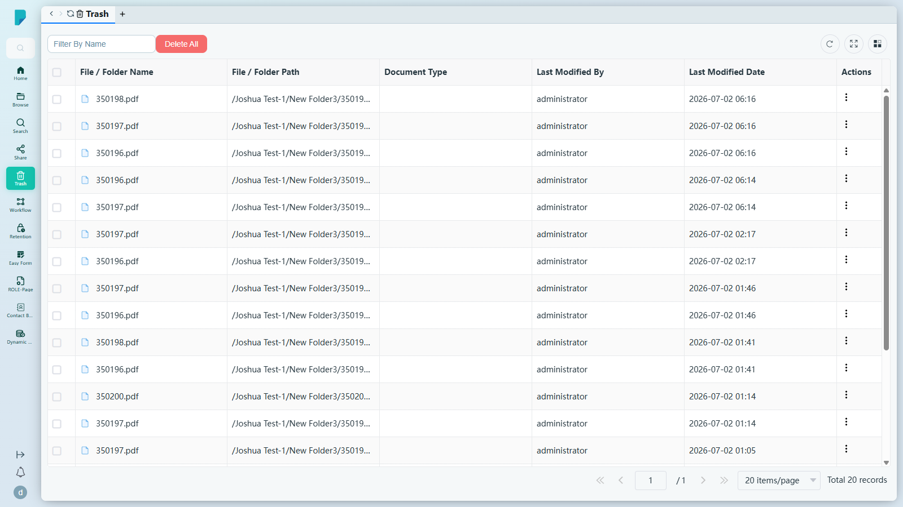
Trash 畫面 此畫面的用途
這是刪除操作的安全網——從檔案庫移除的所有內容都會先進入這裡，因此誤刪只需一按即可還原，而毋須變成支援工單。
工具列與操作
Filter By Name （按名稱篩選）——輸入文字以按檔案／資料夾名稱篩選回收站列表。Delete All （全部刪除）——清空整個回收站（永久性；未經測試——破壞性操作）。Refresh （重新整理）——重新載入列表。Full screen （全螢幕）——切換表格全螢幕顯示。Column settings （欄位設定）——顯示／隱藏表格欄位。
列表與欄位
每列設有剔選框，欄位包括：File / Folder Name 、File / Folder Path （項目被刪除前的所在位置）、Document Type 、Last Modified By 、Last Modified Date 、Actions 。
每列的 Actions (⋮) （操作）：
Restore File / Folder ——將項目還原至原本位置。Permanently Delete File / Folder ——永久移除該項目。
分頁列：Jump up page （第一頁）、Previous page （上一頁）、頁碼輸入框、Next page （下一頁）、Jump down page （最後一頁）、每頁筆數選擇器（預設 20 items/page ）、Total N records 總筆數計數器（此網站共 20 筆記錄）。
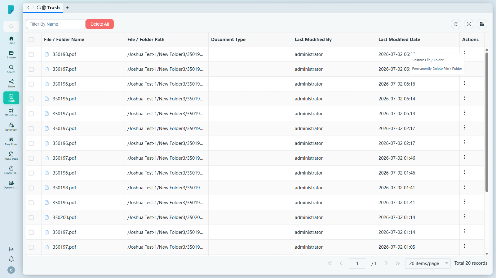
每列操作選單 測試網站觀察記錄
列表載入了真實的已刪除項目（例如從 /Joshua Test-1/ 移除的 PDF）。測試期間並未執行任何還原或永久刪除操作。
誰會使用
所有用戶——任何曾經誤刪檔案的人。
Workflow（工作流程）
選單路徑： Client → Workflow
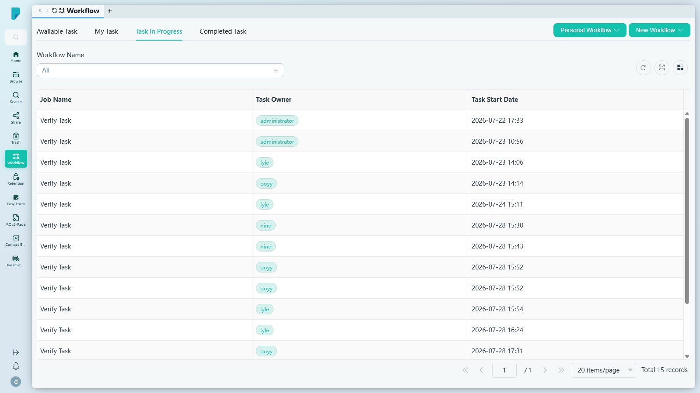
Workflow 畫面 此畫面的用途
你的工作流程中控台——在同一處啟動新流程、接手正等待你處理的任務，以及追蹤所有已在審批鏈中流轉的項目。
工具列與操作
Personal Workflow （個人工作流程，下拉選單）——個人工作流程操作。此網站上顯示：Generate Document （產生文件）。New Workflow （新增工作流程，下拉選單）——啟動工作流程。第一個選項為 New Start Task （新開始任務），其後列出所有已設定的工作流程範本（此網站共 22 個，例如 Joshua Test Email、Joshua Test Document Generation、Batch Update Dynamic Database、Test Script Task）。選擇其中一個即會啟動該工作流程——未經測試，以免在真實資料上啟動工作流程。Workflow Name （工作流程名稱）——按工作流程篩選任務列表（選項：All 加上同樣的 22 個範本）。Refresh （重新整理）——重新載入列表。Full screen （全螢幕）——切換表格全螢幕顯示。Column settings （欄位設定）——顯示／隱藏表格欄位。
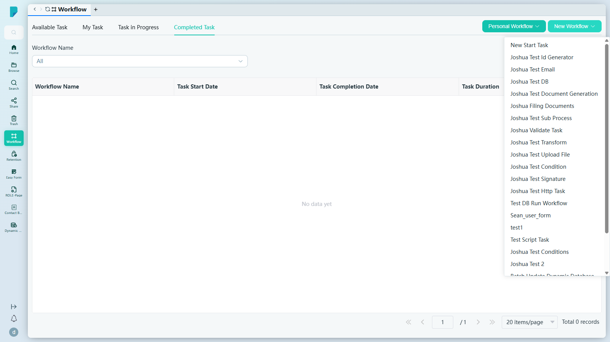
New Workflow 選單 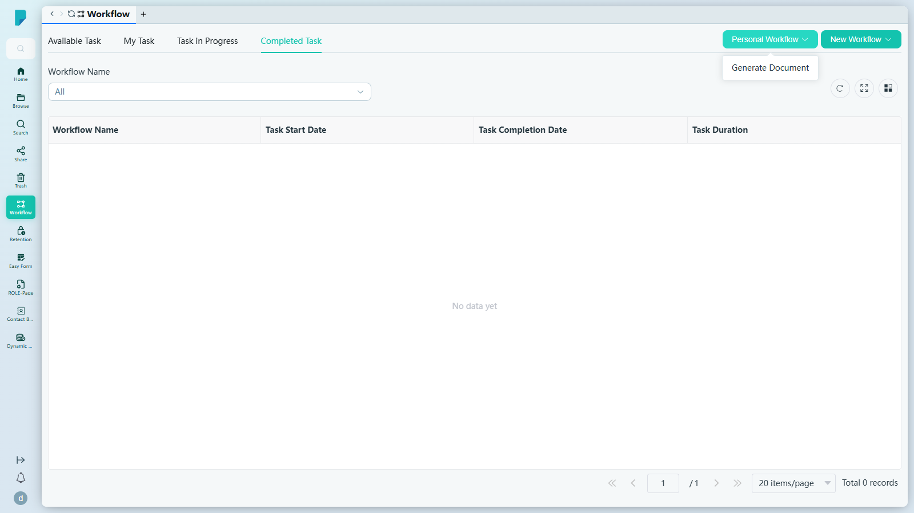
Personal Workflow 選單 分頁
Available Task （可接手的任務）——你可以認領的任務。欄位：Task Name、Task Owner、Status、Task Start Date、Task Due Date。（此網站為空白。）My Task （我的任務）——你的任務。欄位：Job Name、Task Owner、Task Start Date、Last Modified Date。（此網站為空白；此為預設分頁。）Task in Progress （進行中的任務）——正在執行的工作流程作業。欄位：Job Name、Task Owner、Task Start Date。（此網站共 15 筆記錄——由 administrator、lyle、ooyy、nine 擁有的「Verify Task」作業。）Completed Task （已完成任務）——已完成的執行。欄位：Workflow Name、Task Start Date、Task Completion Date、Task Duration。（此網站為空白。）
列表與欄位
每個分頁各有自己的欄位組合（如上所列），並設有標準分頁列：Jump up page （第一頁）、Previous page （上一頁）、頁碼輸入框、Next page （下一頁）、Jump down page （最後一頁）、每頁筆數選擇器（預設 20 items/page ）、Total N records 總筆數計數器。
測試網站觀察記錄
全部四個分頁及兩個下拉選單在 sit-v3 上均正常載入；未發現錯誤。測試期間並未啟動任何工作流程。
誰會使用
任何需要審批、檢閱或啟動文件流程的人——由偶爾批核的用戶到流程負責人皆適用。
Retention List（保存期限列表）
選單路徑： Client → Retention → Retention List
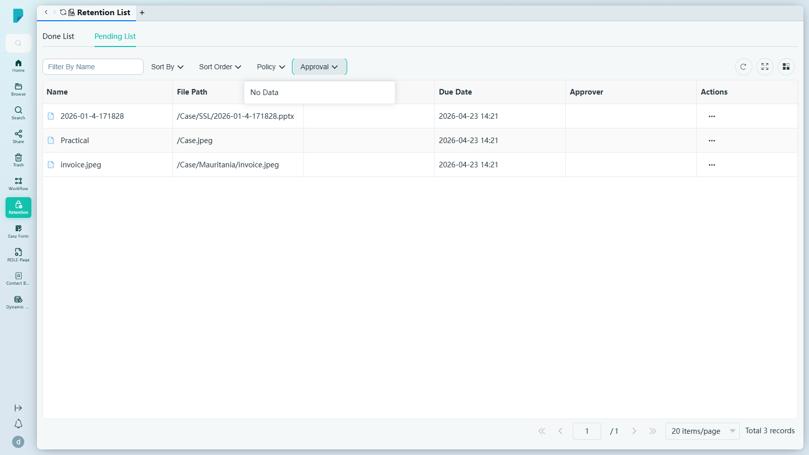
Retention List 畫面 此畫面的用途
追蹤需要進行保存期限覆核的文件——哪些正在等待決定、哪些已獲批准——確保保存期限不會在不知不覺間溜走。
分頁
Pending List （待處理列表，預設）——等待保存期限覆核的項目。欄位：Name 、File Path 、Policy Name 、Due Date 、Approver 、Actions 。此網站共 3 筆記錄（例如 /Case/SSL/2026-01-4-171828.pptx，到期日 2026-04-23 14:21）。Done List （已完成列表）——已獲批准的項目。欄位：Name 、File Path 、Policy Name 、Approver 、Approved Date 、Actions 。（此網站為空白。）
工具列與操作
Filter By Name （按名稱篩選）——輸入文字以按名稱篩選列表。Sort By （排序依據）／ Sort Order （排序方式）——排序下拉選單。在此測試網站上，兩者打開後均顯示空白面板（沒有顯示任何選項）。Policy （政策）——按保存政策篩選。在此測試網站上打開後顯示空白面板。Approval （審批）——按審批狀態篩選。在此測試網站上打開後顯示空白面板。Refresh （重新整理）——重新載入列表。Full screen （全螢幕）——切換表格全螢幕顯示。Column settings （欄位設定）——顯示／隱藏表格欄位。每列 Actions (⋯) ——在此測試網站上點按後沒有顯示任何選單（這些項目沒有可用的操作）。
列表與欄位
各分頁的欄位如上所列。
分頁列：Jump up page （第一頁）、Previous page （上一頁）、頁碼輸入框、Next page （下一頁）、Jump down page （最後一頁）、每頁筆數選擇器（預設 20 items/page ）、Total N records 總筆數計數器。
測試網站觀察記錄
頁面正常載入；沒有錯誤提示橫額。在 sit-v3 上觀察到的異常情況：Sort By／Sort Order／Policy／Approval 下拉選單及每列的 ⋯ 操作按鈕均顯示為空白／無內容。並未對任何文件執行保存操作。
誰會使用
負責覆核保存期限即將屆滿之文件的記錄管理人員及合規人員。
Hold Policy（保留政策）
選單路徑： Client → Retention → Hold Policy
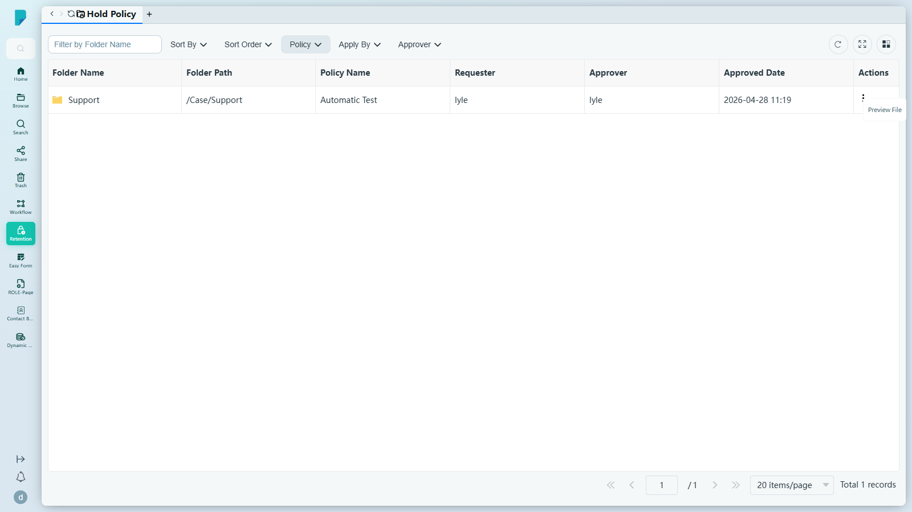
Hold Policy 畫面 此畫面的用途
檢視目前處於法律／合規保留狀態的每個資料夾——由哪項政策保留、誰提出申請、誰批准——確保受保護的記錄不會被意外更改或銷毀。
工具列與操作
Filter by Folder Name （按資料夾名稱篩選）——輸入文字以按名稱篩選被保留的資料夾。Sort By （排序依據）／ Sort Order （排序方式）——排序下拉選單。在此測試網站上打開後顯示空白面板（沒有顯示任何選項）。Policy （政策）——按保留政策篩選。在此測試網站上打開後顯示空白面板。Apply By （申請人）——按提出保留申請的人篩選。Approver （審批人）——按審批人篩選。Refresh （重新整理）——重新載入列表。Full screen （全螢幕）——切換表格全螢幕顯示。Column settings （欄位設定）——顯示／隱藏表格欄位。
保留是在 Browse （瀏覽）中施加的（工具列 → Add Hold Policy ——見 02-browse）。
列表與欄位
欄位：Folder Name 、Folder Path 、Policy Name 、Requester 、Approver 、Approved Date 、Actions 。
此網站共 1 筆記錄——資料夾 Support （/Case/Support）由政策 "Automatic Test" 保留，由 lyle 於 2026-04-28 11:19 提出並批准。
每列 Actions (⋯) ——在此測試網站上點按後沒有顯示任何選單。分頁列：Jump up page （第一頁）、Previous page （上一頁）、頁碼輸入框、Next page （下一頁）、Jump down page （最後一頁）、每頁筆數選擇器（預設 20 items/page ）、Total N records 總筆數計數器。
測試網站觀察記錄
頁面正常載入；沒有錯誤提示橫額。與 Retention List 相同的異常情況：篩選下拉選單及每列的 ⋯ 按鈕在 sit-v3 上均顯示為空白／無內容。測試期間並未施加或解除任何保留。
誰會使用
需要即時檢視所有處於法律保留狀態項目的合規人員及記錄管理人員。
Easy Form（簡易表格）
選單路徑： Client → Easy Form
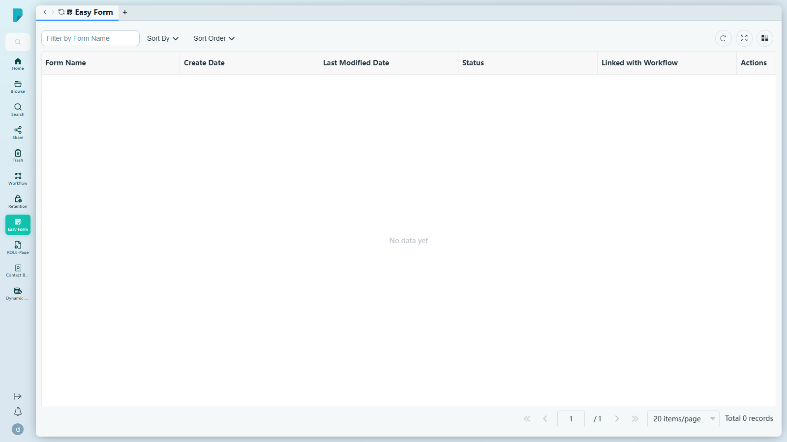
Easy Form 畫面 此畫面的用途
你的 Easy Form 表格庫——毋須紙張即可收集資訊的數碼表格。每份表格均顯示其狀態及是否已連結工作流程，讓你隨時掌握哪些表格已可使用。
工具列與操作
Sort By （排序依據）——排序表格列表。Sort Order （排序方式）——遞增／遞減。
列表與欄位
欄位：Form Name 、Create Date 、Last Modified Date 、Status 、Linked with Workflow 、Actions 。
分頁列：頁面導覽及 Total N records 總筆數計數器。
測試網站觀察記錄
測試網站上的已知問題： Easy Form 列表因後端 500 錯誤而載入失敗（提示訊息："Request failed with status code 500"），因此無法顯示表格——出錯後頁面顯示「No data yet / Total 0 records」（見 client-15-easy-form-500-error.png）。受此問題影響，表格列、填寫表格檢視及任何新增選項均無法探索。
錯誤狀態 誰會使用
需要填寫、提交或管理數碼表格的用戶。
ROLE-Page
選單路徑: Client → ROLE-Page
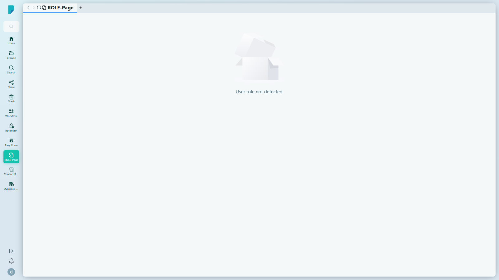
ROLE-Page 畫面 此畫面的用途
一個按角色度身訂做的登陸頁面，讓每類用戶都能看到對他們最重要的工具與資訊。此處顯示的內容由管理員按角色設定。
工具列與操作
此畫面沒有可見的工具列——它是一個顯示頁，內容取決於角色設定。
列表與欄位
測試網站備註
示範帳戶看到 "User role not detected" ——這是按角色設定後的狀態，並非錯誤：此帳戶尚未指派任何角色頁面。已設定角色的帳戶會在此看到其角色專屬的儀表板。
誰會使用
每位用戶——頁面內容會隨管理員所指派的角色而調整。
Contact Book
選單路徑: Client → Contact Book
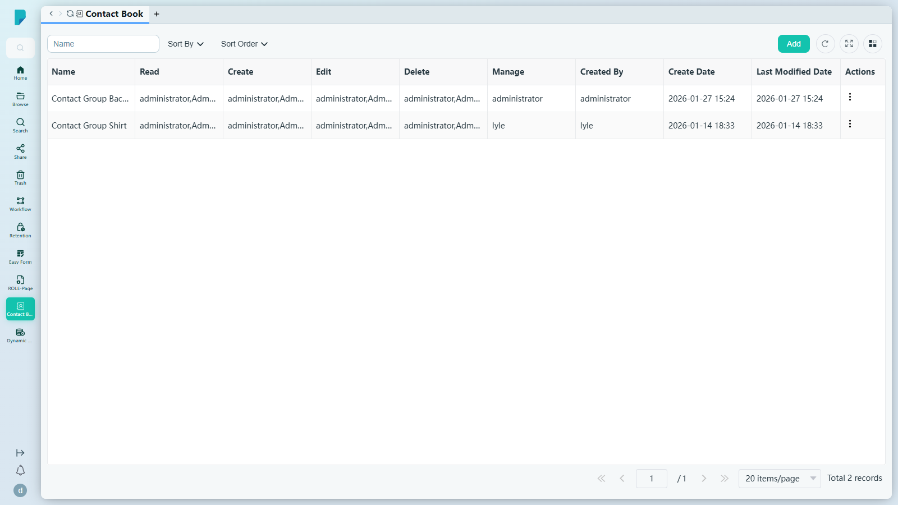
Contact Book 畫面 此畫面的用途
把共享通訊錄放在文件旁邊，讓文件背後的人員永遠只需一按即可找到。細緻的權限控制可精確設定誰可以讀取、新增、編輯、刪除或管理每本通訊錄。
工具列與操作
Name ——按通訊錄名稱篩選列表。Sort By / Sort Order ——排序列表。Add ——建立新通訊錄（見下方對話框）。Refresh 、Full screen 、Column settings ——標準表格工具。
列表與欄位
欄位：Name 、Read 、Create 、Edit 、Delete 、Manage （每個權限欄列出獲授權的用戶/群組，例如 "administrator, Administrators Group"）、Created By 、Create Date 、Last Modified Date 、Actions 。
分頁列：Jump up page （第一頁）、Previous page 、頁碼輸入框、Next page 、Jump down page （最後一頁）、每頁筆數選擇器（預設 20 items/page ）、Total N records 計數器（此網站有 2 本通訊錄，例如 "Contact Group Bacon"）。
點按一本通訊錄會開啟其詳細檢視（見下）。
對話框與面板
New Contact Book (Add)
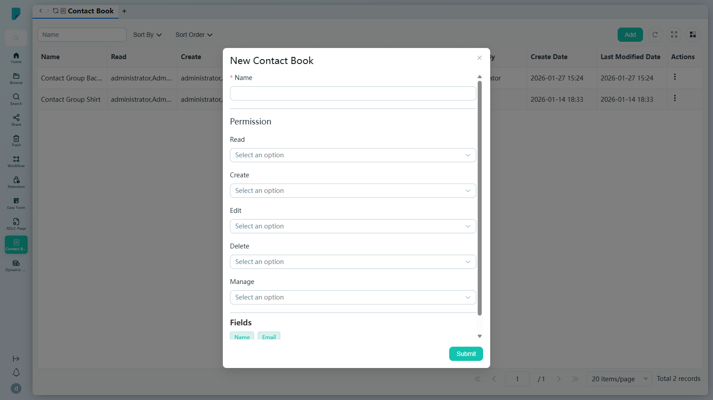
New Contact Book 對話框
Name *——通訊錄名稱。Permission ——按動作分別選擇用戶/群組：Read 、Create 、Edit 、Delete 、Manage （建立者會自動加入 Read 及 Manage）。Fields ——此通訊錄內每位聯絡人所需的欄位；預設為 Name 及 Email ，可按 Add Field 加入更多。Submit ——建立通訊錄並開啟其詳細檢視。（已測試：建立了 "MKT-TEST Contact Book"。）
通訊錄詳細檢視
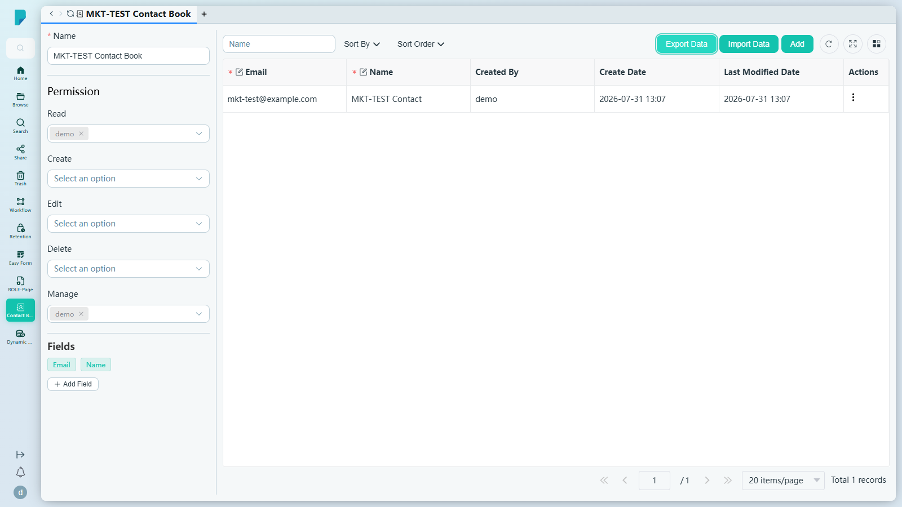
通訊錄詳細檢視
頂部表單顯示通訊錄的 Name 、Permission 選擇器（標籤顯示目前獲授權者，例如 demo）及 Fields （Email、Name、Add Field）。
聯絡人列表工具列：Name 篩選、Sort By 、Sort Order 、Export Data （下拉選單：Export Excel 、Export CSV 、Export vCard(VCF) ）、Import Data 、Add （新增聯絡人）。
聯絡人欄位：Email *、Name *（兩者均標示為必填）、Created By 、Create Date 、Last Modified Date 、Actions 。
新增聯絡人
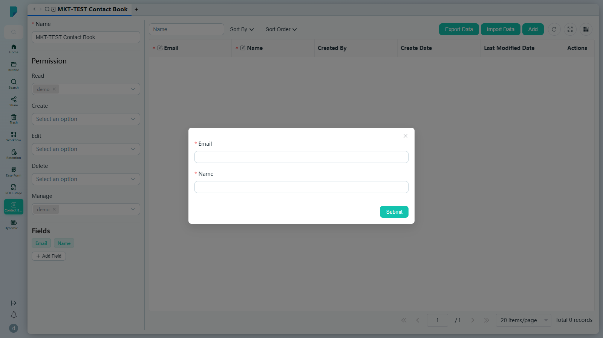
新增聯絡人對話框
每個通訊錄欄位各有一個輸入框——此處為 Email * 及 Name *——再加上 Submit 。（已測試：建立了 "MKT-TEST Contact" <mkt-test@example.com>。）
測試網站備註
已建立的測試資料：通訊錄 "MKT-TEST Contact Book" ，內有一位聯絡人 "MKT-TEST Contact" （mkt-test@example.com）。
現有範例通訊錄："Contact Group Bacon"、"Contact Group Shirt"。（它們的權限欄顯示字面的 "null" 項目——此網站的資料小異常。）
誰會使用
為客戶、供應商或專案管理共享聯絡人名單的團隊。
Dynamic DB
選單路徑: Client → Dynamic DB
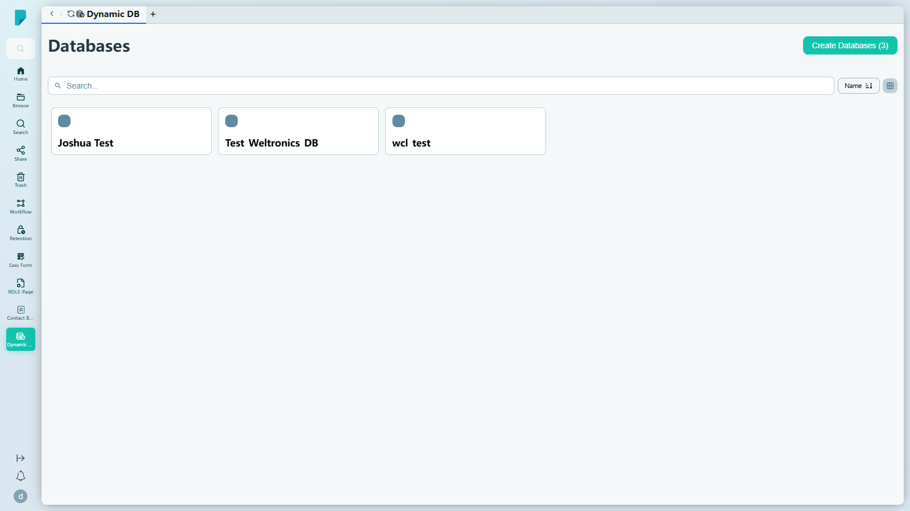
Dynamic DB 畫面 此畫面的用途
你的動態資料庫就在文件旁邊——可以瀏覽、搜尋及在其中建立資料表的結構化業務資料，全程無需離開 DocPal。
工具列與操作
Create Databases (N) ——開啟建立表單（見下）；括號內的數字顯示現有資料庫數量（測試前此網站有 3 個）。Search... ——按名稱篩選資料庫卡片。資料庫以卡片 形式顯示（圖示 + 名稱）：此網站上有 Joshua Test、Test_Weltronics_DB、wcl_test。點按卡片即可開啟其工作區。
對話框與面板
Create Database
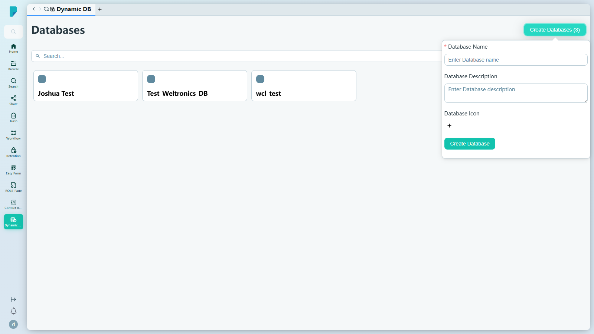
Create Database 表單
Database Name *——文字欄位（"Enter Database name"）。Database Description ——多行文字。Database Icon ——"Select an icon" 選擇器（+ 按鈕）。Create Database ——建立資料庫並開啟其工作區。（已測試：建立了 "MKT-TEST DB"。）
資料庫工作區（建立後或點按卡片後開啟）
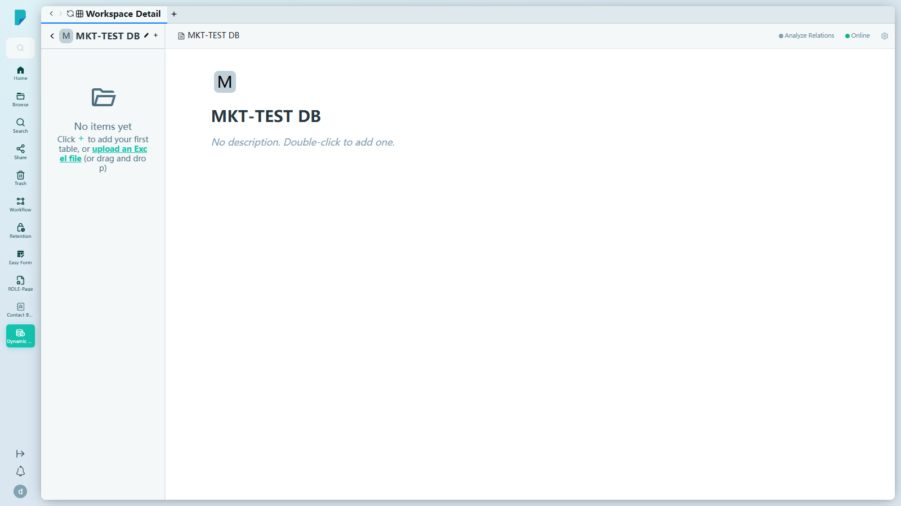
資料庫工作區
顯示資料庫名稱、一個 Online 狀態徽章，以及描述（"No description. Double-click to add one."）。
Analyze Relations ——分析資料表之間的關係。空白狀態："No items yet — Click + to add your first table, or upload an Excel file (or drag and drop)"。
測試網站備註
已建立的測試資料：資料庫 "MKT-TEST DB" （空白，沒有資料表）。
頁面及建立流程在 sit-v3 上運作正常；未發現錯誤。
誰會使用
需要結構化業務資料、又不想離開 DocPal 的用戶。
Account Menu
選單路徑: Client → Account Menu（左側邊欄底部的頭像）
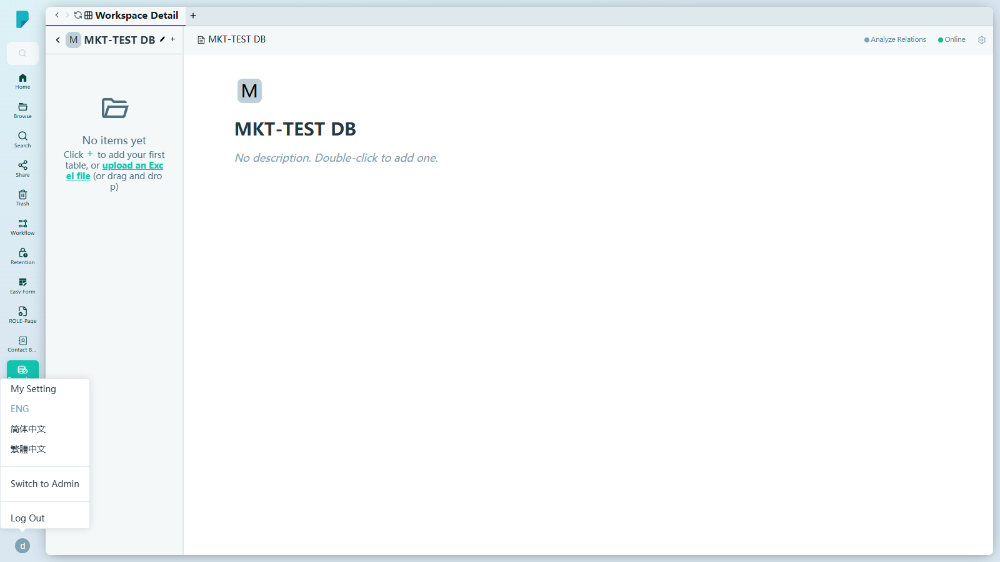
Account 選單 此畫面的用途
頭像下拉選單——你的個人控制項隨手可得：設定、語言及工作階段操作，全部收納在一個小巧的選單中。
選單項目
My Setting ——開啟你的個人設定頁面（見下）。ENG / 简体中文 / 繁體中文 ——介面語言選項（英文、簡體中文、繁體中文）。目前使用的語言會以停用狀態顯示（此帳戶為 ENG）。Switch to Admin ——跳轉至管理後台（僅限管理員；未測試）。Log Out ——結束工作階段（未測試）。
對話框與面板
My Setting
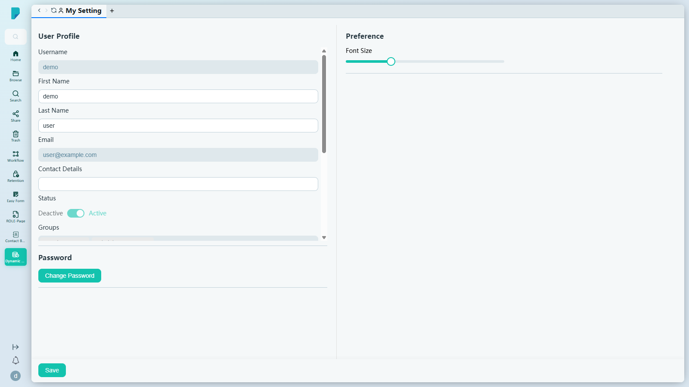
My Setting 頁面 以獨立頁面開啟，分為三個部分：
User Profile
Username ——唯讀（demo）。First Name / Last Name ——可編輯（demo / user）。Email ——唯讀。Contact Details ——可編輯文字。Status ——Active/Deactive 開關，唯讀（Active）。Groups ——唯讀；顯示你所屬的群組（此帳戶：Members Group、Administrators Group）。Role 、Department 、Company ——唯讀。Registered ——唯讀（此帳戶顯示 "Pending"）。User Level ——唯讀（"Standard"）。
Password ——Change Password 按鈕。Preference ——Font Size 滑桿（10–24，預設 14）。Save ——儲存個人資料及偏好設定的變更（未測試）。
Update Password（由 Change Password 開啟）
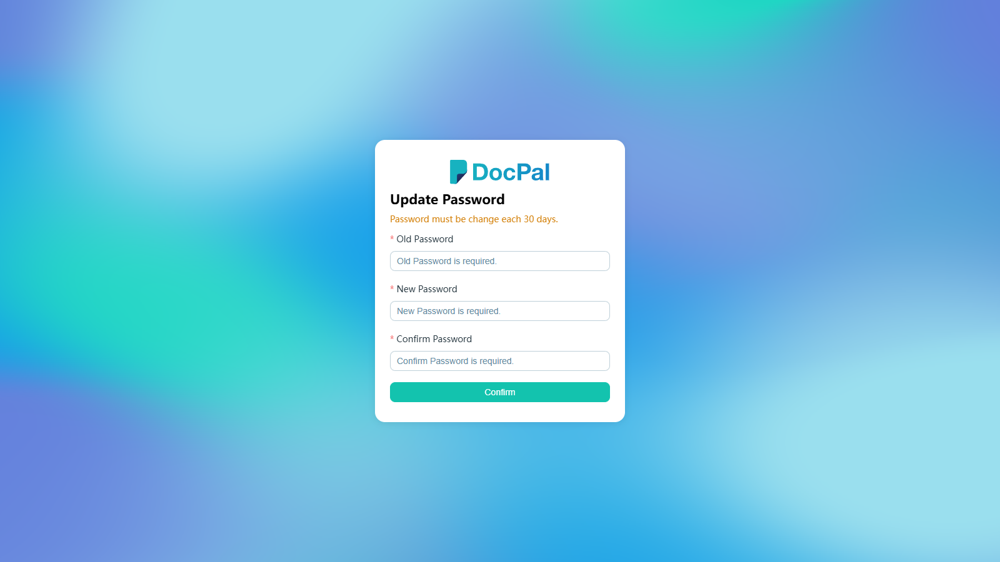
Update Password 頁面 Change Password 會開啟一個專用頁面（"Password must be change each 30 days."）：
Old Password 、New Password 、Confirm Password 及 Confirm （未提交）。
測試網站備註
以上內容已在 sit-v3 以 demo 帳戶驗證；未發現錯誤。語言未曾切換，Switch to Admin / Log Out 亦未曾點按。
誰會使用
每位已登入用戶；Switch to Admin 選項僅對管理員顯示。
WMS Verification
選單路徑： Client → Workflow → New Workflow → Packing List
此畫面的用途
透過工作流程上載裝箱單（Packing List）等文件，由系統進行 OCR 辨識；用戶核對及修正辨識結果並批准後，數據會傳送至 WMS PDA 系統。
操作步驟
步驟 1： 開啟 Workflow ，按一下 New Workflow ，選擇 Packing List 。
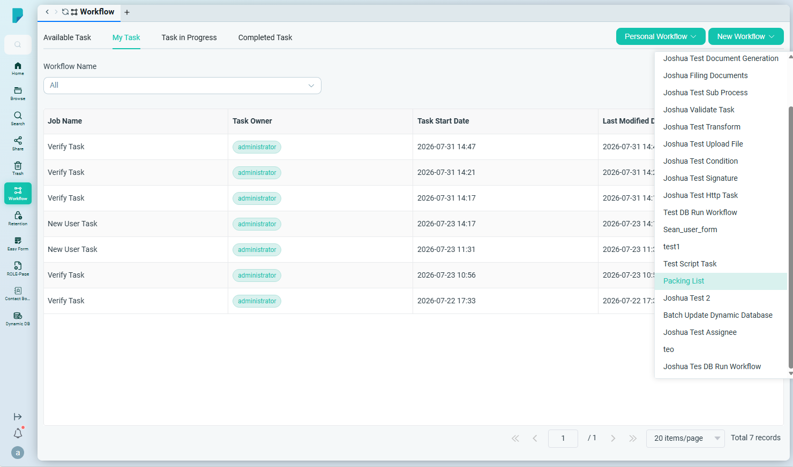
選擇 Packing List 工作流程 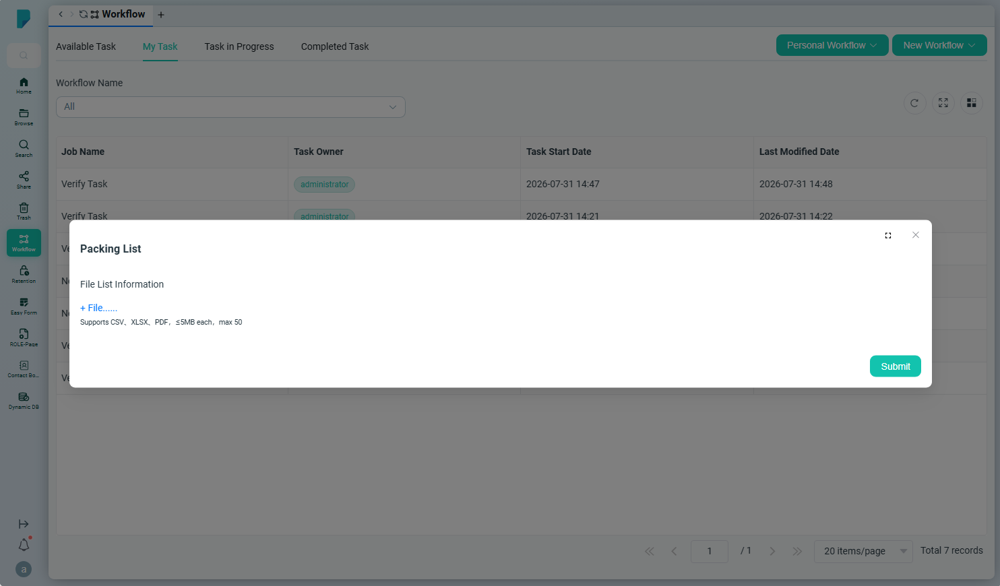
新工作流程表格
步驟 3： 用戶可以從本機電腦或從 DocPal 選取檔案。
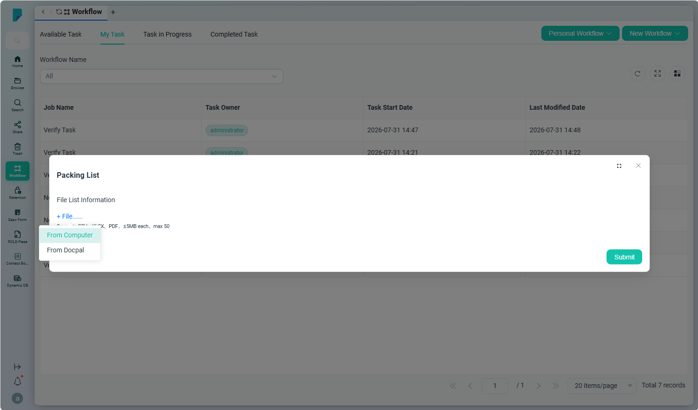
從本機或 DocPal 選取檔案
步驟 4： 所有文件上載完成後，按一下 Submit 。
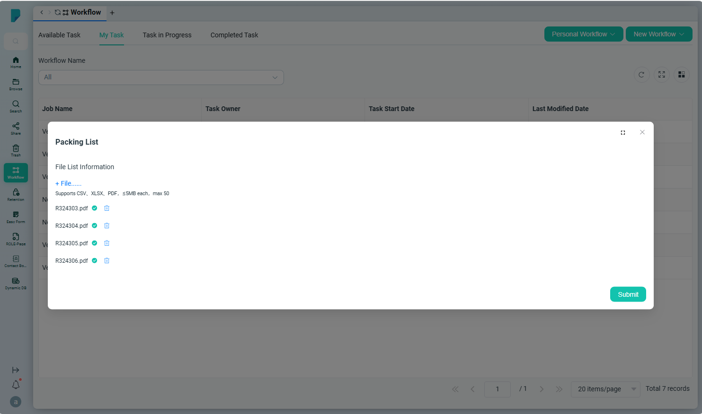
上載文件後按 Submit
步驟 5： 系統會處理檔案，用戶可查看任務詳情：左側是已上載的文件列表，接著是所選文件的預覽；右側是以表格形式顯示的 OCR 數據，用戶可按一下儲存格編輯內容；下方是發票（invoice）資料，同樣可按一下編輯。
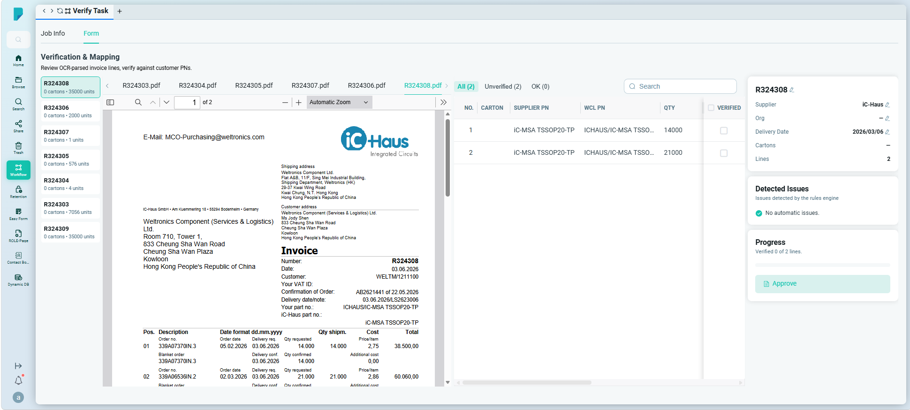
OCR 數據核對畫面
步驟 6： 用戶核對內容後，勾選 Verify 核取方塊，然後在 invoice detail 上按一下 Approve ，批准該發票。
勾選 Verify 並批准發票
步驟 7： 確認後，左側文件列表的檔名旁會顯示 [ok] 標記。所有文件確認完成後，用戶即可提交工作流程，數據會傳送至 PDA。
誰會使用
需要把裝箱單等紙本或電子文件數據核對後匯入 WMS PDA 系統的倉務及文件處理人員。